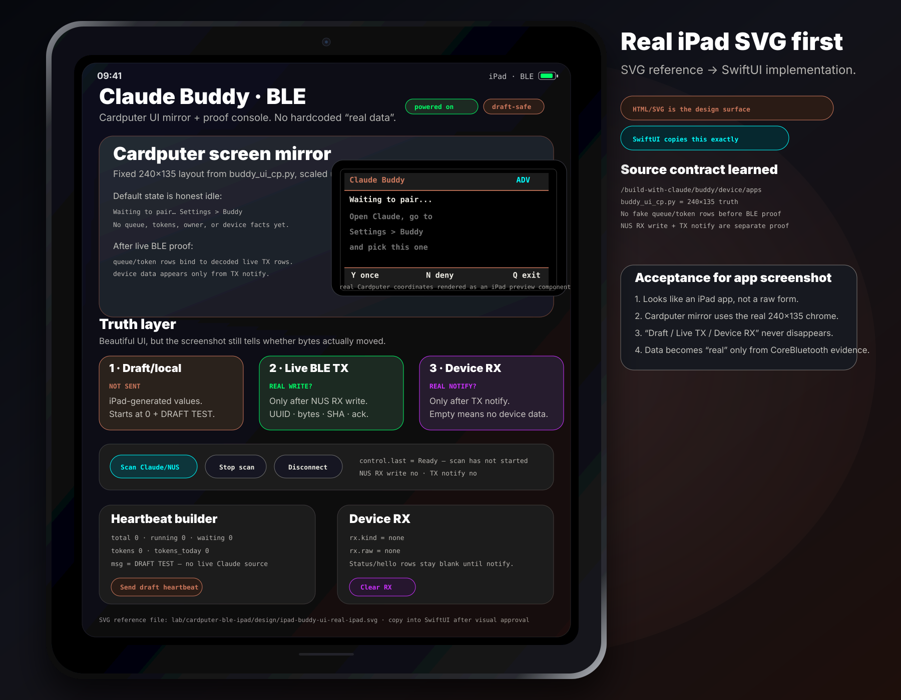

Claude Buddy · iPad BLE mockup
HTML/SVG first because it is easiest to inspect, share, and adjust. SwiftUI should copy this structure after the visual is accepted.


Design rules learned from /build-with-claude/buddy/device/apps
- Cardputer surface is fixed
240×135landscape, scaled up on iPad. - Header is
0..20dark with orange title, right status badge, orange hairline aty=20. - Idle screen shows pairing instructions only; no fake queue/token values.
- Connected screen may show queue/token/message rows only from live BLE rows.
- Bottom hint strip always reserves
y=111..134forY once / N deny / Q exit. - Proof cards must remain next to the pretty UI: draft/local, live BLE TX, device RX.